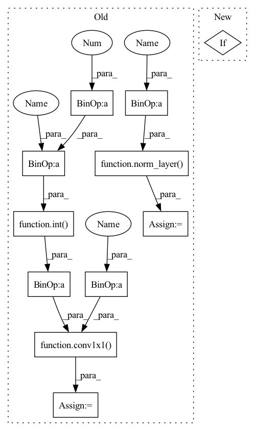

Pattern ID :1043
Before Change
super(Bottleneck, self).__init__()
if norm_layer is None:
norm_layer = nn.BatchNorm2d
width = int(planes * (base_width / 64. )) * groups
// Both self.conv2 and self.downsample layers downsample the input when stride != 1
self.conv1 = conv1x1(inplanes, width)
self.bn1 = norm_layer(width)
self.conv2 = conv3x3(width, width, stride, groups, dilation)
self.bn2 = norm_layer(width)
self.conv3 = conv1x1( width, planes * self.expansion)
self.bn3 = norm_layer(planes * self.expansion)
self.relu = nn.ReLU(inplace=True)
self.downsample = downsample
self.stride = stride
After Change
self.layer3 = self._make_layer(BasicBlock, 256, 2, stride=2)
self.layer4 = self._make_layer(BasicBlock, 512, 2, stride=2)
if pretrained:
self.load_pre_trained_weights()
def load_pre_trained_weights(self):
print("Loading Pytorch pretrained weights...")In pattern: SUPERPATTERN
Frequency: 3
Non-data size: 11
Instances Fragment ID: 3223809
Project Name: zhangheng19931123/mutualguide
Commit Name: fd2c4cc66d80d955aad4ca7ec6045a203dc095ea
Time: 2021-02-01
Author: heng.zhang@irisa.fr
File Name: models/resnet_backbone.py
M Class Name: Bottleneck
N Class Name: ResNetBackbone
M Method Name: __init__(2)
N Method Name: __init__(9)
M Parent Class: nn.Module
N Parent Class: nn.Module
M File Name: models/resnet_backbone.py
N File Name: models/resnet_backbone.py
M Start Line: 77
M End Line: 92
N Start Line: 56
N End Line: 74
Before Change
super(Bottleneck, self).__init__()
if norm_layer is None:
norm_layer = nn.BatchNorm2d
width = int( planes * (base_width / 64. )) * groups
// Both self.conv2 and self.downsample layers downsample the input when stride != 1
self.conv1 = conv1x1(inplanes, width)
self.bn1 = norm_layer(width)
self.conv2 = conv3x3(width, width, stride, groups, dilation)
self.bn2 = norm_layer(width)
self.conv3 = conv1x1( width, planes * self.expansion)
self.bn3 = norm_layer( planes * self.expansion)
self.relu = nn.ReLU(inplace=True)
self.downsample = downsample
self.stride = stride
After Change
self.layer3 = self._make_layer(BasicBlock, 256, 2, stride=2)
self.layer4 = self._make_layer(BasicBlock, 512, 2, stride=2)
if pretrained:
self.load_pre_trained_weights()
def load_pre_trained_weights(self):
print("Loading Pytorch pretrained weights...") Fragment ID: 3223808
Project Name: zhanghengdev/mutualguide
Commit Name: fd2c4cc66d80d955aad4ca7ec6045a203dc095ea
Time: 2021-02-01
Author: heng.zhang@irisa.fr
File Name: models/resnet_backbone.py
M Class Name: Bottleneck
N Class Name: ResNetBackbone
M Method Name: __init__(2)
N Method Name: __init__(9)
M Parent Class: nn.Module
N Parent Class: nn.Module
M File Name: models/resnet_backbone.py
N File Name: models/resnet_backbone.py
M Start Line: 77
M End Line: 92
N Start Line: 56
N End Line: 74
Before Change
super().__init__()
if norm_layer is None:
norm_layer = nn.BatchNorm2d
width = int( planes * (base_width / 64. )) * groups
// Both self.conv2 and self.downsample layers downsample the input when stride != 1
self.conv1 = conv1x1(inplanes, width)
self.bn1 = norm_layer(width)
self.conv2 = conv3x3(width, width, stride=1, groups=groups, dilation=dilation) // modification
self.bn2 = norm_layer(width)
self.pool = nn.Identity() if stride == 1 else nn.AvgPool2d(kernel_size=stride, stride=stride) // modification
self.conv3 = conv1x1( width, planes * self.expansion)
self.bn3 = norm_layer( planes * self.expansion)
self.relu = nn.ReLU(inplace=True)
self.downsample = downsample
self.stride = stride
After Change
norm_layer = nn.BatchNorm2d
if groups != 1 or base_width != 64:
raise ValueError("BasicBlock only supports groups=1 and base_width=64")
if dilation > 1:
raise NotImplementedError("Dilation > 1 not supported in BasicBlock")
// Both self.conv1 and self.downsample layers downsample the input when stride != 1
self.conv1 = conv3x3(inplanes, planes, stride=1) // modification
self.bn1 = norm_layer(planes) Fragment ID: 3223811
Project Name: ain-soph/trojanzoo
Commit Name: c1c3808d21dd3fd8716f015066fedab824244a3f
Time: 2022-02-20
Author: ain-soph@live.com
File Name: trojanvision/utils/model_archs/resnet_ap.py
M Class Name: Bottleneck_AP
N Class Name: BasicBlockAP
M Method Name: __init__(9)
N Method Name: __init__(9)
M Parent Class: nn.Module
N Parent Class: nn.Module
M File Name: trojanvision/utils/model_archs/resnet_ap.py
N File Name: trojanvision/utils/model_archs/resnet_ap.py
M Start Line: 95
M End Line: 104
N Start Line: 29
N End Line: 36